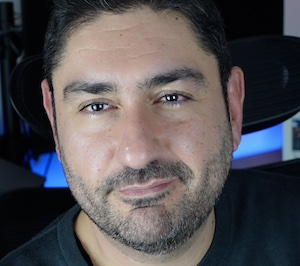

Cybersecurity Executive/Founder/Speaker and Trainer
Cybersecurity executive with 25 years in the industry. Consult Partner for Security and Resilience at Kyndryl BeNeLux, founder of Peach Studio, former Global Managing Director of Red Team at Kroll, founder of Crimson7 and Director at PwC. Across technical and executive roles, he learned to bridge the two worlds.
Specialised in threat informed defense, offensive security and security operations, he now works on AI security and adversary simulation. A recognised speaker and trainer at Cyber and AI Security events, known for translating technical risk into terms executives and boards can act on.
Owns Security and Resilience services for BeNeLux, and advises on AI security for agentic systems.
AI prototyping and creative lab. Flagship product is Foil, an on-device AI code security scanner.
Threat research and adversary simulation company, brought to market with a successful exit.
Ran proactive services for EMEA and owned global Red Team strategy. Country Manager for Belgium.
Led offensive security and incident response for PwC Belgium and Europe. EMEA SME for OT security.
Ethical hacker in IBM's X-Force RED, grew into team leadership.
Founded MEDIALAB (consulting, 1999-2005). Network Engineer and Wireless Specialist at 2Bite S.r.l. (2003-2005). Researcher at Telecom Italia (2006). While still a student, trainer for Introduction to Object Oriented Development.
Speaker at BruCON, hardwear.io and BSides. Trainer at BruCON, and author of open source security tools and AI trainings.
Attributed CVE: CVE-2026-20533